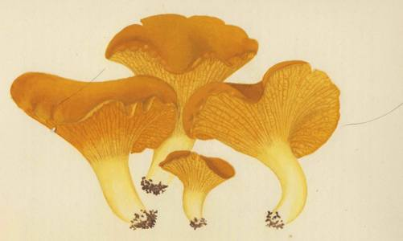

Now our excursion among the mushrooms has ended. Free of professional
inhibitions, we as amateurs have traveled far and wide, brazenly suggesting novel
etymologies and theories of our own. Some of these, when put to further test,
are sure to crumble. But our argument is a frontal one, and does not depend on
single links. Beginning with an addiction to wild mushrooms and keeping our
eye always on them, we have compared the words used for fungi by the various
Indo-European peoples, concentrating on the metaphors that are latent in them.
We have found a series of semantic themes recurring throughout these fungal
vocabularies, and these themes have suggested origins for many words that have
heretofore baffled the philologists. If this approach through semantic themes
should prove to have been successful, it could be applied to other specialized
vocabularies for elementary things and activities that our remotest ancestors must
have talked about.
We began by asking what lay behind the English word 'toadstool'. In the
course of our inquiry we discovered several attributes common to wild fungi
and toads. The peoples of the North Sea basin think of both tribes - fungi and
amphibia - as venomous. Over a broader area and running back deeper into
the past, the peoples of northern Europe think of fungi and toads as organisms
that swell up, and also as dunglike vermin. We find that both toads and fungi
inspire revulsion and fear, and naturally our ancestors considered them instinct
with evil spirits. Both are slimy and mucoid. Fungi are tumor-like, clodlike;
and toads are misshapen growths, foul and ugly. Fungi are aphrodisiacs, and
toads are lecherous. Both suggest the idea of procreation, in a variety of ways.
On a larger stage, we have found that in the cultures of Europe, where deadly
serpents are few, the toad is the indigenous equivalent of the serpent of the East.
Eve's serpent, exercising its horrid and fearsome spell, was a creature of the
East. In the eastern Mediterranean the two creatures competed for dominion
over men's souls, but in the West the toad was supreme. The 'toadstool' of the
West emerges as the mycological and cultural equivalent of the ahi-chattra(ka)
or 'snake's parasol' of the Sanskrit writings. A common fund of words for all
these ideas is drawn upon, in the various Indo-European languages, to refer
to the fungi, and also to toads, and when in a given language the same or
similar words are drawn down from the common fund for the two orders of
creatures, the peoples speaking that language associate toads and fungi to-
gether, and by reason of the words that overlap, and the common attributes,
374
PLATE LXXX
Jean-Henri Fabre. Cantharellus cibarius Fr.
French: chanterelle, girole;
Russian: lisichka.

VALE
their feelings toward them take on the same tone. Similar metaphorical trans-
fers appear to be indigenous also in human societies far removed from the Indo-
European world.
But behind the interweaving of these innumerable words and ideas, there
lies the Mystery of the divine mushrooms. We have now learned that many spe-
cies of these strange growths possess a power such as early man could only
have regarded as miraculous. Indeed they may have given to him the very
idea of the miraculous, and inspired many of the themes that come down to us
in our heritage of folklore. Mushrooms were doubly associated with fire. They
were used as primary tinder in that miracle of divine copulation, the generation
of fire by the fire-drill, and the divine mushrooms were the offspring of the
union of the Lightning Bolt with the Mother Earth. We have suggested that the
divine mushrooms played a vital part in shaking loose early man's imagination,
in arousing his capacity for self-perception, for awe, wonder, and reverence.
They certainly made it easier for him to entertain the idea of God. In Europe
the secret of the mushrooms was lost long ago, but it lingers on, fossilized and
misunderstood, in our vocabulary, as when the Greeks spoke of mushrooms as
the 'gods' food', the Flemings of 'devils' bread', the demonic crapaudin of France,
the demonic 'toad's stool' of the English, yes and the 'fly' of the German Flie-
genschwamm. Our legacy of mycophobia, what is it but a simple tabu, the after-
math of the emotional hold of those mushrooms on our own ancestors?
There were other hallucinogens in the vegetable world, but we think the mush-
rooms were primary.
Men ordinarily think of words as combinations of sounds that can be visualized
with the aid of letters, and listed alpabetically in dictionaries, and there neatly
defined and ticketed with their histories. But the words in dictionaries correspond
only to 'stills' in photography: the dictionaries catch them in a given posture,
at a particular moment in time and space. This is true even of the largest dictio-
naries, which try to cover meanings over centuries and which cite a few out-
croppings of the same word in other languages; for the center of gravity even
in these big dictionaries is still in a single language, and therefore their angle of
vision is self-centered and Ptolemaic. Moreover, no dictionary can hope to deal
with all of the subtle semantic associations, and all the gradations of feeling, that
the sound (which is the word made manifest) evokes. But these associations and
feelings are the life and soul of the word, of which current usage in a single
community may be only a passing phase. A word is a thin thread of sound com-
ing down to us from earliest human times, a sound passed on from mouth to
mouth, slowly changing, assuming different contours in the mouths of different
375
CHAPTER FIVE
communities, each of these variants remaining a strand of the original thread,
these different strands plaited in and out among themselves, tangling with other
threads of similar sounds but different meanings; impalpable, visible (through
writing) only in recent millennia and until yesterday only to a few; thin as air;
but solidly joined in the alembic of the human mind to particular perceptions
of the senses and keyed to particular feelings; this link between sound on the
one hand, and meaning and feeling on the other, displaying a tough continuity
down the river of time and across vast stretches of diverse cultural expression,
a continuity that stands in amazing contrast with the airy nothing of the words
themselves. Words are a secretion peculiar to the human organism, and though
uttered through a localized vocal mechanism, a secretion attuned to the whole
organism.
A.E. Housman in his famous Leslie Stephen lecture on the nature of poetry
startled his public by asserting that for him great poetry was measurable by phy-
siological reflexes. The shiver down his spine, his beard that bristled at the thought
of great lines while he was shaving, the catch in his throat, sudden activity in
his lachrymal ducts - these were his poetical touchstones. Could he not have
carried his idea further ? Was he not fixing his attention only on those rare con-
junctures of grosser reflexes that are the fruit of the greatest utterances? In less
degree does not every word possess its visceral counterpart, emanating from the
pit of the stomach but registering itself in localized manifestations - in the sti-
mulation or inhibition of glandular activity or incipient muscular twitches, in
sights or sounds perceived only by the mind's eye or mind's ear, in imaginary
tactile or olfactory or gustatory sensations ? Teeth are set on edge by sour grapes,
and also by hearing sour grapes mentioned, and even by the silent passage of
those two words through the attuned mind. Perhaps in the long run the stability
that is the astonishing property of words is traceable to the solar plexus, to this
conditioned reflex, which is the obverse side of the audible entity. The great
speaker or writer - the composer or conductor - is the master who manipu-
lates these responses with supreme artistry, playing on the human instruments
that are his audience, the instruments knowing they are in ecstasy but blissfully
unaware of the infinitely subtle physiological wherefore. Here is a sense in which
the kingdom of heaven is within us; and the music of the spheres turns out to
be a physiological symphony. Let not this reflection disturb the believer in a
Supreme Architect, for the ultimate enigma always remains close by, and man's
most searching inquiries are always confined within the bounds of the flexible
but impenetrable envelope of the unknown, of that dark, distensible womb
that is our prison and our Eden.
376
VALE
By assaying the words used among various peoples for the/fungi, we have
perhaps suggested reasons for the mycophobia that afflicts most of the Western
peoples. The semantic associations of these words, their emotional coloring,
are rooted in the fears and beliefs of our ancestors in the earliest ages, perhaps
when they were what we call Palaeolithic men. We study them objectively
by digging up their artifacts and applying the highest order of intelligent cu-
riosity to these old stones. But within ourselves, in our emotional responses, in
our words that come down from long ago, we bear within us as part of us the
evidence for a subjective understanding of those our forebears. Our elementary
words with their emotional evocation are oral artifacts descended from those
remote times, and like palimpsests occasionally permit themselves to be read
layer beneath layer. Our words are a repertory of wood-notes wild, if only we
attune ourselves to the faint descant that rises from them. How amusing it has
been to discover in mycophobia the willing, nay determined, subservience
of many Europeans to a simple tabu such as we like to associate with primitive
peoples, a subservience to emotional responses that seem to stem back to the day
when our ancestors found themselves face to face with the miraculous powers
of the sacred mushroom! The secret lost, the tabu survives. Like the tribes
that our anthropologists study, we cling to our own tabus and seek to justify
them by rationalizing them. Few men want freedom, however they may talk.
But then again perhaps man is free in his choice when he chooses to abide within
the confines of his unreason.